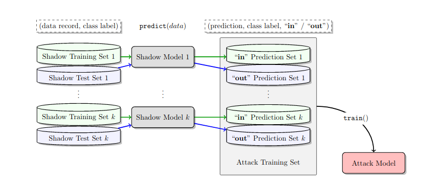
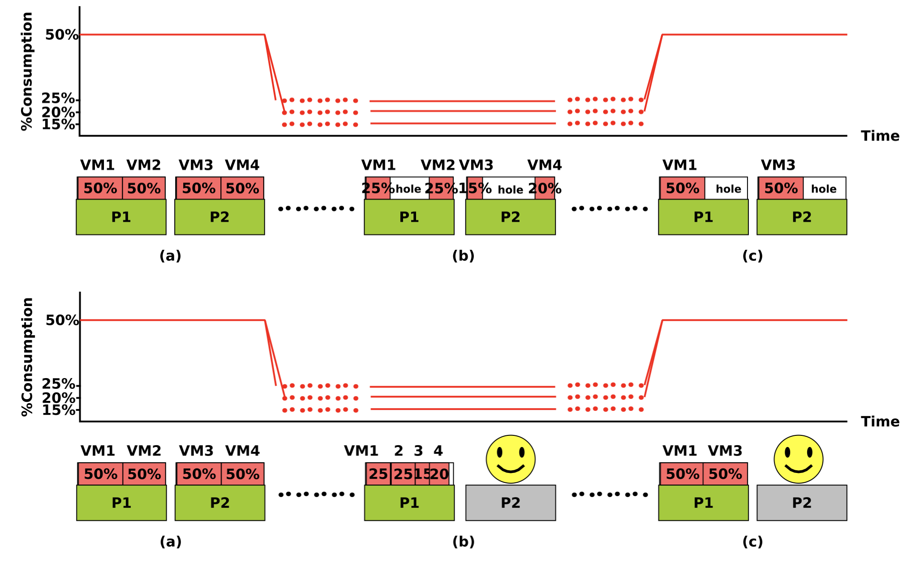
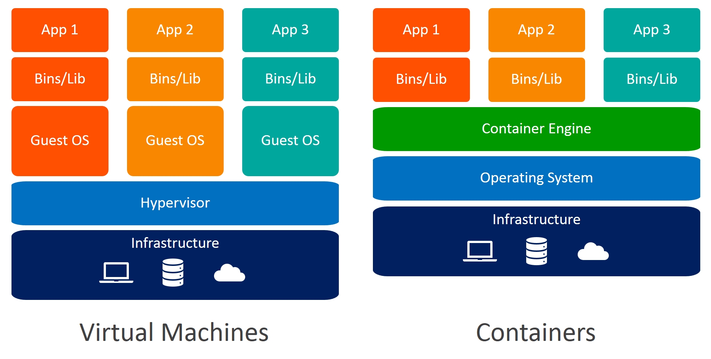
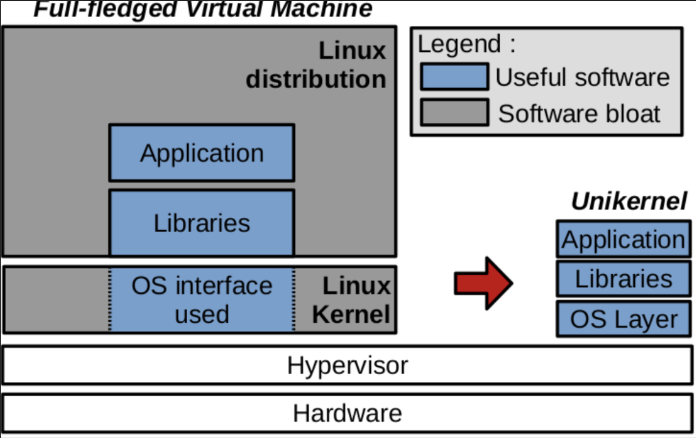

Histoire de l'Intelligence Artificielle et du Machine Learning
1950
Création du test de Turing
Imaginé par le mathématicien britannique Alan Turing, l'épreuve consiste à savoir déterminer la différence entre une machine et un humain, au moyen de question posé par un tierce parti, qui doit déterminer qui est la machine de l'humain.
1974 - 1980
Premier hivers de l'IA
Le premier hivers de l'IA marque le désintérêt significatif, dû aux promesses non respectés trop importantes de celles-ci durant sa création.
1987 - 1993
Deuxième hivers de l'IA
Deuxième vague de désintérêt.
1993
Le regain d'intérêt pour le Machine Learning
Le principal regain d'intérêt n'est pas dû à de nouveaux algorithmes révolutionnaires, mais bien à une augmentation significatives de la puissances de calcul des différents ordinateurs. De plus, l'essort d'internet donne de nouvelles possibilités aux chercheurs.
1997
Deep Blue
Développé par IBM, cet ordinateur est spécialisé dans le jeu d'échecs, et bat le champion du monde de l'époque Garry Kasparov.
2015-2017
AlphaGo
Développé par Google DeepMind, basé sur une méthode de Monte-Carlo, il s'agit d'un programme de jeu de Go, qui a battu le champion du monde de Go, l'avancée est significative. En effet, le nombre de Shannon, qui représente la difficulté d'un jeu, est de 10^120 pour le jeu d'échec, et de 10^600 pour le jeu de Go.
Application du Machine Learning à la sécurité
Le Machine Learning pour se prémunir des attaques et intrusions
Le système de Machine Learning peut scanner les fichiers pour savoir si il est vérolé, à la manière d'un antivirus, mais celui ci ne va pas s'arrêter à analyser en fonction des attaques existantes, mais bien en anticipant les possibles futurs possibles attaques.
Scanner les forums spécialisés pour anticiper les futures attaquants
Pouvoir combattre efficacement des attaquants utilisant un autre système de Machine Learning
Le Machine Learning pour attaquer les différents systèmes
Intégrer un système informatique nouveau par apprentissage deson système de fonctionnement.
Faire des malwares plus performant, qui sont capables de réagir automatiquement contre des systèmes de défenses.
La sécurité des systèmes de Machine Learning
Il existe 3 grandes différentes classes d'attaques sur les systèmes de Machine Learnings. Ces 3 grandes classes sont reprises dans ce qui suit. Il s'agit des sujets les plus actuels de recherches.
I./ Model Stealing
Le Model Stealing, sur un modèle de Machine Learning, est l'ensemble des techniques utilisés pour reconstituer le modèle, ou des informations à propos des données utilisés durant la phase d’entraînement. En terme de Privacy, cela présente de gros problème de sécurité si de tels attaques était possible, mais surtout possible et probante dans la réalité. Prenons par exemple un hôpital qui souhaite construire un modèle de Machine Learning capable de faire de la détection de cancer. Pour cela, il utilise pour entraîner son modèle, les données à disposition dans l'hôpital, à savoir les données personnels de patients, avec leurs consentement. Mais si un attaquant est capable de reconstituer ces données, alors la vie privée de ces patients est révélée. On peut de même imaginer un bot qui étudie le comportement extra-conjugual, etc.
Il existe un papier, nommé Membership Inference Attack against Machine Learning Models, qui présente une attaque de ce type, à savoir retrouver à partir d'une donnée isolée (record), savoir si ce dernier à été utiliser au sein du jeu de données d'entraînement (training set) du système attaqué. Pour ce faire, ils construisent un système d'attaque à base de copie du modèle attaqué (les shadows models). Ces derniers sont entrainés sur des données qui se veulent les plus proches possibles du jeu d'entraînement, via les connaissances du jeu de données qu'est susceptible d'avoir l'attaquant (par exemple, pour l'hopital, la liste de l'ensemble de tout les patients). Une fois entraîner, l'ensemble de ces shadows models vont se voir attribuer des jeux de données à classer, labeler 'in' ou 'out' selon si ces derniers était dans leur jeu d'entrainement ou non. Les données en sortie, classés et labelés, sotn ensuite utilisé comme données d'entraînement pour construire le système d'attaque. Tout ceci est repris dans le système présenté en Figure 1 .
Il s'agit la d'un exemple de papier qui présente une attaque répondant au problème de Membership Inference. Mais dans ce papier, nommé Knock Knock, Who's There ?, en plus de formaliser de manière plus classique le problème, à la manière d'un jeu à résoudre comme sont présentés les jeux cryptographique classique de sécurité, qui présente une attaque sur des agrégats de localisation.

Figure 1: Shadow Model Attack
Le problème de Membership Inference n'est de plus, qu'un problème parmis l'ensemble des problèmes qui sont inclus dans la classe de Model Stealing. Ce sont les problèmes de privacy et sécurité parmis les plus importants, car alors un attaquant est capable de reconstituer entièrement ce qu'a employés le défenseur. Un autre problème dans cette classe de problème, serait celui de reconstituer au sein d'un réseau de neurones les différentes valeurs des liens entre les neurones, reconstituant ainsi le modèle complètement. (Cela permettrait notamment de pouvoir diffuser un modèle qui répond de manière identique au utilisateurs, mais avec un système de 'backdoor', qui permettent un attaquant de faire des choses non prévus par le bot initial.)
II./ Data Poisoning Attacks
Dans cette classe, on ne cherche plus à reconstituer le modèle employés par notre cible, mais à altérer ses réponses de manières permanentes, et ce pour l'ensemble des utilisateurs. Parmis les attaques de Data Poisoning, on peut distinguer deux types générales d'attaques.
Attaque visant l'intégrité du système de Machine Learning
Attaque visant la disponibilité du système de Machine Learning
III./ Adverserial Attacks

Figure 4: Méthode pour économiser l'énergie
La solution est donc les migrations de machines virtuelles. Lorsqu'on peut migrer plusieurs machine virtuelle comme sur la Figure 4 (b) et (c) on économise de l'énergie en mettant l'ordinateur P2 en pause ou même éteint.
Comparaison avec les conteneurs

Figure 5: Comparaison des machines virtuelles et des conteneurs
Il existe parfois une confusion entre machine virtuelle et conteneur comme on peut le voir sur la Figure 5. Cependant il existe quelques differences qui leur permettent d'être complémentaires. Comme on peut le voir sur l'image les conteneurs fonctionnent directement avec le système d'exploitation ce qui permet aux conteneurs d'être très rapide. Mais en contre partie les conteneurs ne peuvent fonctionner qu'avec une sorte d'OS (macOS, Linux, Microsoft, ..) et ne sont pas aussi sécurisés qu'une machine virtuelle. En effet si un conteneur a une faille alors un hacker peut facilement sortir du conteneur et avoir des informations ou même pire.
Les machines virtuelles sont plus volumineuses, un peu moins rapide mais chaque VM a son propre OS ce qui garantie une plus grande sécurité.
Comme je disais cela peut être complémentaire et au sein d'une VM mettre plusieurs conteneurs.
Les Unikernels

Figure 6: Les Unikernels
Les VMs et les conteneurs ont donc chacune des avantages et des inconvénients. La recherche actuelle porte sur les unikernels qui essayent de fusionner les avantages des deux.
Le principe des unikernels est de créer une machine virtuelle mais une machine virtuelle très légère spécifique a une application. En effet si on utilise une machine virtuelle pour une application bien précise alors des parties du noyau et du systeme d'exploitation sont inutiles comme on peut le voir sur la Figure 6. L'idée est donc de créer un noyau et donc une machine virtuelle allégée pour une application précise.